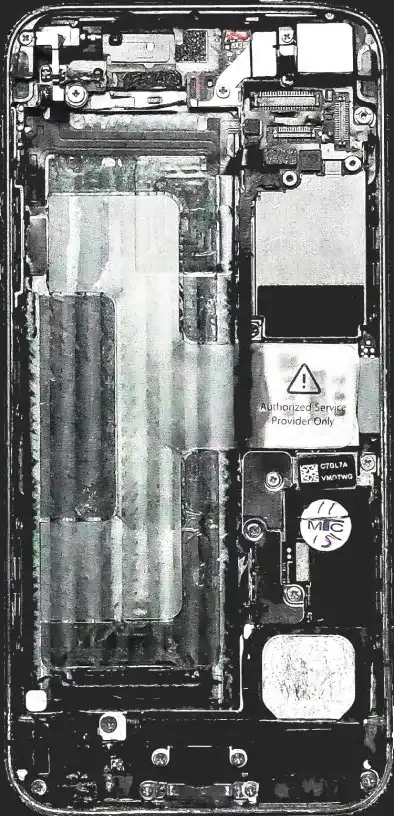

Un bilan carbone désastreux
L’empreinte écologique de Batman représente celle de 2,6 millions d’habitants réunis. Son impact sur l’environnement est démesuré. Comment engendre- t-il tant de gaz à effets de serre en sauvant des vies ? Son bilan carbone est impacté par l’obsolescence programmée.
Légende : ville polluée @unsplash
Des smartphones et des ordinateurs dernière génération, il en utilise énormément. Tout comme sa batmobile, et autres appareils haute-technologie. L’homme chauve-souris est un milliardaire dans la vie de tous les jours, on peut imaginer qu’il a tout réussi et compris les enjeux humains. Pour performer dans son rôle de super-héros, il acquiert des produits high-tech. Il sauve des vies, mais ne se préoccupe absolument pas de son empreinte carbone.
Qu’est-ce que l’obsolescence programmée ?
Légende : Disque dure qui se décompose @unsplash
Le but est de diminuer le temps de vie d’un produit. Cette action doit être volontaire de la part des distributeurs. Mais pourquoi faire ça ? Pour pouvoir le remplacer plus rapidement et augmenter le taux de vente.
"C’est une infraction punie par la loi qui peut aller jusqu’à deux ans de prison et 300.000 euros d'amende."
Le livre “Du jetable au durable” de Laetitia Vasseur et Samuel Sauvage l’explique. On y trouve un extrait du discours de Benoît Hamon de 2013 page 18. Voici ses propos : “L’obsolescence programmée n’est pas un concept paranoïde ou complotiste. Ce n’est d’ailleurs pas un concept, c’est une pratique établie.” C’était avant que la loi ne paraisse officiellement. Ses propos sont les prémisses de l’ajout de cette nouvelle législation. Vous pouvez retrouver d’autres livres sur le même sujet : -L’obsolescence programmée des objets de Bernard London -Bon pour la casse de Serge Latouche -Obsolescence programmée de Benjamin Nathé -Peut-on éviter l’obsolescence programmée de David Klingler
L'obsolescence programmée du smartphone
Légende : Téléphone cassé ©unsplash